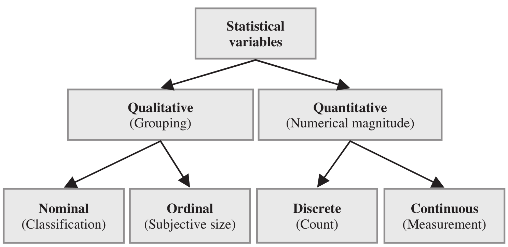

[1] 12Introdução à Ecologia Numérica no R
Análise de dados multivariados
Agrupamento (cluster)
9 de maio de 2023
Maurício Vancine
Análises Ecológicas no R (2022)

15 capítulos: perguntas em ecologia, linguagem R, tidyverse, análises univariadas, multivariadas e geoespaciais
Conteúdo
Tempo: 2 horas
- Linguagem R (30 min.)
- Análise exploratória de dados (30 min.)
- Análise de dados multivariados (60 min.)
IMPORTANTE!!!
Estamos num espaço seguro e amigável
Sintam-se à vontade para me interromper e tirar dúvidas

1. Linguagem R
Definição
O R é uma linguagem de programação livre (open source), direcionada à manipulação, análise e visualização de dados, com diversas expansões (pacotes) para dados ou análises específicas
Histórico - Linguagem S
John M. Chambers (Stanford University, CA, EUA)
Versões
- Old S (1976-1987)
- New S (1988-1997)
- S4 (1998)
IDE (Integrated Development Environment)
- Interface: S-PLUS (1988-2008)

Histórico - Linguagem R
Robert Gentleman e Ross Ihaka (Auckland University, NZ)
Versões
- Desenvolvimento (1993-2000)
- Versão 1 (2000-2004)
- Versão 2 (2004-2013)
- Versão 3 (2013-2020)
- Versão 4 (2020-atual)
IDE (Integrated Development Environment)
- Interface: RStudio (2011-atual)
- Atualmente: R Core Team

Histórico - Linguagem R

Aplicações
Manipulação, visualização e análise de dados
- Estatísticas univariadas e multivariadas
- Análises de dados ecológicos
- Análise de dados espaciais, temporais e sonoros
- Análise de dados funcionais, genéticos e filogenéticos
- Análise de dados geoespaciais e sensoriamento remoto
- Visualização de todos os tipos de dados anteriores
R Markdown e quarto
- Textos em HTML, PDF, Word, ODT, Markdown
- Slides, Websites, Blogs, Livros e Artigos
- Shiny


IDE
Ambiente de Desenvolvimento Integrado (Integrated Development Environment)
IDE
Ambiente de Desenvolvimento Integrado (Integrated Development Environment)


Interface

Projeto R (.Rproj)
- Facilita o trabalho em múltiplos ambientes
- Cada projeto possui seu diretório, documentos e workspace
- Permite controle de versão (git e GitHub)
Antes de começarmos…
Conferindo os computadores

Console
O console é onde a linguagem R instalada é carregada para executar os códigos

Console
Na janela do console aparece o símbolo
>, seguido de uma barra vertical|que fica piscando (cursor), onde digitamos ou enviamos nossos códigos do scriptVamos digitar
10 + 2e apertar a teclaEnterpara que essa operação seja executadaO resultado retorna o valor
12, precedido do valor1entre colchetes[1]
Console
Os colchetes
[]demonstram a posição do elemento numa sequência de valoresVamos criar uma sequência usando o operador
:para demonstrar issoO número que aparecer nos colchetes vai depender da largura das janelas
Console
Noções de programação
Número inteiro (integer)
Texto entre aspas simples ('') ou duplas ("") (character ou string)
Script
Onde os códigos são escritos e salvos no formato .R
- Atalho:
ctrl + shift + N

Script
Os códigos devem ser digitados preferencialmente no script
Para executar um código, deixem o cursor em qualquer lugar da linha
Atalho:
ctrl + enter
Script
Salvar um script
- Atalho:
ctrl + S
Script
Comentários (#)
Comentários não são lidos pelo R e descrevem informações em nosso script
São representados pelo
#(hash) ou#'(hash-linha)
Script
Comentários (#)
Sempre comece um script com um cabeçalho
Ajuda a lembrar o que o script faz e quando foi escrito
Operadores
Operadores aritméticos (retorna números)
| Operador | Descrição | Uso |
|---|---|---|
| + | Adição | a + b |
| – | Subtração | a - b |
| * | Multiplicação | a * b |
| / | Divisão | a / b |
| %% | Resto da divisão | a %% b |
| %/% | Quociente da divisão | a %/% b |
| ^ | Potenciação | a^b |
Operadores
Operadores relacionais (retorna TRUE|FALSE)
| Operador | Descrição | Uso |
|---|---|---|
| < | Menor | a < b |
| > | Maior | a > b |
| <= | Menor ou igual | a <= b |
| >= | Maior ou igual | a > = b |
| == | Igual | a == b |
| != | Não igual (diferente) | a!=b |
Operadores
Ordem das operações aritméticas
() > ^ > * ou / > + ou -
Objetos
Palavras que atribuímos (guardamos) dados possibilitando sua manipulação
Atribuição (
<-)palavra <- dados
Atalho:
alt + -

Objetos
Vamos atribuir o valor 10 à palavra eco

Objetos
Sempre confira a atribuição
Dica: chame o objeto novamente
Objetos
Seja criativo
O R sobrescreve os valores dos objetos com o mesmo nome
Objetos
Seja criativo, mas nem tanto…
O R tem limitações ao nomear objetos!
Começar por letras (
a-zouA-Z) ou pontos (.)Conter letras (
a-zouA-Z), números (0-9), underscores (_) ou pontos (.)Case-sensitive, i.e., ele difere letras maiúsculas de minúsculas
Evitar utilizar letras maiúsculas, acentos ou cedilha (
ç)Não podem ser iguais a nomes especiais:
break, else, FALSE, for, function, if, Inf, NA, NaN, next, repeat, return, TRUE, while
Objetos
Ambiente (Environment)
Os objetos podem ser visualizados no painel Environment
Objetos
Podemos utilizar objetos para fazer operações
Objetos
Podemos utilizar objetos para atribuir resultados de operações
Objetos
Tipos de objetos
Funções
Códigos que realizam operações em argumentos
- Estrutura de uma função:
nome_da_funcao(argumento1, argumento2)
- Nome da função: remete ao que ela faz (inglês)
- Parênteses: limitam a função
- Argumentos: onde a função atuará
- Vírgulas: separam os argumentos
Funções
Exemplos
Funções
Argumentos
Os argumentos podem ser de dois tipos:
Objetos ou valores: dados onde a função irá atuar
Parâmetros: mudam o comportamento da função (texto =
TRUE,FALSEou"texto")
Funções
Argumentos como valores
Funções
Argumentos como parâmetros
Funções
Atribuição de resultados a objetos
[1] 1 2 3 4 5 1 2 3 4 5 1 2 3 4 5 1 2 3 4 5 1 2 3 4 5Funções
Atribuição, função e linha temporal
Criar dois objetos
Somar esses objetos e atribuição
Raiz quadrada e atribuição
Funções
Atribuição, função e linha temporal
Atribuição de dados a objetos
Funções que operam e mudam esses dados
Nova atribuição desses resultados a novos objetos
Ajuda
Descreve as informações de uma função

Description: descrição da função
Usage: uso da função e argumentos
Arguments: argumentos e suas especificações
Details: detalhes da função
Value: interpretar a saída (output)
Note: notas sobre a função
Authors: autores da função
References: referências bibliográficas da função
See also: funções relacionadas
Examples: exemplos do uso da função
Pacotes
Conjunto de funções extras para executar tarefas específicas

Pacotes
Duas fontes
- CRAN (Comprehensive R Archive Network)
- GitHub (Repositório de códigos)

Pacotes
Instalação de pacotes
- Download do pacote para o computador (como instalar um software/APP)
- Precisa estar conectado à internet
- O nome do pacote precisa estar entre aspas
- Função (CRAN):
install.packages("pacote")
Instalar o pacote vegan
Verificar pacotes instalados
Pacotes
Carregamento de pacotes
- Carregar o pacote para o R (como abrir software/APP)
- Carrega-se toda vez que se abre o R
- Não precisa estar conectado à internet
- O nome do pacote não precisa estar entre aspas
- Funções:
library(pacote)ourequire(pacote)
Carregar o pacote vegan
Verificar pacotes carregados
Principais erros
Se seu script rodou sem erros, tem algo errado…


Help me help you: um bestiário para entender erros e pedir ajuda no R

Principais erros
1. Esquecer de completar um código (+)
Parênteses
Aspas
Principais erros
2. Esquecer da vírgula
3. Chamar um objeto errado
Principais erros
4. Esquecer de carregar um pacote
Principais erros
4. Esquecer de carregar um pacote
# carregar o pacote
library(vegan)
## carregar dados
data(dune)
## funcao do pacote vegan
decostand(dune, "hell") Achimill Agrostol Airaprae Alopgeni Anthodor Bellpere Bromhord
1 0.2357023 0.0000000 0.0000000 0.0000000 0.0000000 0.0000000 0.0000000
2 0.2672612 0.0000000 0.0000000 0.2182179 0.0000000 0.2672612 0.3086067
3 0.0000000 0.3162278 0.0000000 0.4183300 0.0000000 0.2236068 0.0000000
4 0.0000000 0.4216370 0.0000000 0.2108185 0.0000000 0.2108185 0.2581989
5 0.2156655 0.0000000 0.0000000 0.0000000 0.3049971 0.2156655 0.2156655
6 0.2041241 0.0000000 0.0000000 0.0000000 0.2500000 0.0000000 0.0000000
7 0.2236068 0.0000000 0.0000000 0.0000000 0.2236068 0.0000000 0.2236068
8 0.0000000 0.3162278 0.0000000 0.3535534 0.0000000 0.0000000 0.0000000
9 0.0000000 0.2672612 0.0000000 0.2672612 0.0000000 0.0000000 0.0000000
10 0.3049971 0.0000000 0.0000000 0.0000000 0.3049971 0.2156655 0.3049971
11 0.0000000 0.0000000 0.0000000 0.0000000 0.0000000 0.0000000 0.0000000
12 0.0000000 0.3380617 0.0000000 0.4780914 0.0000000 0.0000000 0.0000000
13 0.0000000 0.3892495 0.0000000 0.3892495 0.0000000 0.0000000 0.0000000
14 0.0000000 0.4082483 0.0000000 0.0000000 0.0000000 0.0000000 0.0000000
15 0.0000000 0.4170288 0.0000000 0.0000000 0.0000000 0.0000000 0.0000000
16 0.0000000 0.4605662 0.0000000 0.3481553 0.0000000 0.0000000 0.0000000
17 0.3651484 0.0000000 0.3651484 0.0000000 0.5163978 0.0000000 0.0000000
18 0.0000000 0.0000000 0.0000000 0.0000000 0.0000000 0.2721655 0.0000000
19 0.0000000 0.0000000 0.3110855 0.0000000 0.3592106 0.0000000 0.0000000
20 0.0000000 0.4016097 0.0000000 0.0000000 0.0000000 0.0000000 0.0000000
Chenalbu Cirsarve Comapalu Eleopalu Elymrepe Empenigr Hyporadi
1 0.0000000 0.0000000 0.0000000 0.0000000 0.4714045 0.0000000 0.0000000
2 0.0000000 0.0000000 0.0000000 0.0000000 0.3086067 0.0000000 0.0000000
3 0.0000000 0.0000000 0.0000000 0.0000000 0.3162278 0.0000000 0.0000000
4 0.0000000 0.2108185 0.0000000 0.0000000 0.2981424 0.0000000 0.0000000
5 0.0000000 0.0000000 0.0000000 0.0000000 0.3049971 0.0000000 0.0000000
6 0.0000000 0.0000000 0.0000000 0.0000000 0.0000000 0.0000000 0.0000000
7 0.0000000 0.0000000 0.0000000 0.0000000 0.0000000 0.0000000 0.0000000
8 0.0000000 0.0000000 0.0000000 0.3162278 0.0000000 0.0000000 0.0000000
9 0.0000000 0.0000000 0.0000000 0.0000000 0.3779645 0.0000000 0.0000000
10 0.0000000 0.0000000 0.0000000 0.0000000 0.0000000 0.0000000 0.0000000
11 0.0000000 0.0000000 0.0000000 0.0000000 0.0000000 0.0000000 0.2500000
12 0.0000000 0.0000000 0.0000000 0.0000000 0.0000000 0.0000000 0.0000000
13 0.1740777 0.0000000 0.0000000 0.0000000 0.0000000 0.0000000 0.0000000
14 0.0000000 0.0000000 0.2886751 0.4082483 0.0000000 0.0000000 0.0000000
15 0.0000000 0.0000000 0.2948839 0.4662524 0.0000000 0.0000000 0.0000000
16 0.0000000 0.0000000 0.0000000 0.4923660 0.0000000 0.0000000 0.0000000
17 0.0000000 0.0000000 0.0000000 0.0000000 0.0000000 0.0000000 0.3651484
18 0.0000000 0.0000000 0.0000000 0.0000000 0.0000000 0.0000000 0.0000000
19 0.0000000 0.0000000 0.0000000 0.0000000 0.0000000 0.2540003 0.4016097
20 0.0000000 0.0000000 0.0000000 0.3592106 0.0000000 0.0000000 0.0000000
Juncarti Juncbufo Lolipere Planlanc Poaprat Poatriv Ranuflam
1 0.0000000 0.0000000 0.6236096 0.0000000 0.4714045 0.3333333 0.0000000
2 0.0000000 0.0000000 0.3450328 0.0000000 0.3086067 0.4082483 0.0000000
3 0.0000000 0.0000000 0.3872983 0.0000000 0.3535534 0.3872983 0.0000000
4 0.0000000 0.0000000 0.3333333 0.0000000 0.2981424 0.3333333 0.0000000
5 0.0000000 0.0000000 0.2156655 0.3409972 0.2156655 0.3735437 0.0000000
6 0.0000000 0.0000000 0.3535534 0.3227486 0.2500000 0.2886751 0.0000000
7 0.0000000 0.2236068 0.3872983 0.3535534 0.3162278 0.3535534 0.0000000
8 0.3162278 0.0000000 0.3162278 0.0000000 0.3162278 0.3162278 0.2236068
9 0.3086067 0.3086067 0.2182179 0.0000000 0.3086067 0.3450328 0.0000000
10 0.0000000 0.0000000 0.3735437 0.2641353 0.3049971 0.3049971 0.0000000
11 0.0000000 0.0000000 0.4677072 0.3061862 0.3535534 0.0000000 0.0000000
12 0.0000000 0.3380617 0.0000000 0.0000000 0.0000000 0.3380617 0.0000000
13 0.0000000 0.3015113 0.0000000 0.0000000 0.2461830 0.5222330 0.2461830
14 0.0000000 0.0000000 0.0000000 0.0000000 0.0000000 0.0000000 0.2886751
15 0.3611576 0.0000000 0.0000000 0.0000000 0.0000000 0.0000000 0.2948839
16 0.3015113 0.0000000 0.0000000 0.0000000 0.0000000 0.2461830 0.2461830
17 0.0000000 0.0000000 0.0000000 0.3651484 0.2581989 0.0000000 0.0000000
18 0.0000000 0.0000000 0.2721655 0.3333333 0.3333333 0.0000000 0.0000000
19 0.0000000 0.0000000 0.0000000 0.0000000 0.0000000 0.0000000 0.0000000
20 0.3592106 0.0000000 0.0000000 0.0000000 0.0000000 0.0000000 0.3592106
Rumeacet Sagiproc Salirepe Scorautu Trifprat Trifrepe Vicilath
1 0.0000000 0.0000000 0.0000000 0.0000000 0.0000000 0.0000000 0.0000000
2 0.0000000 0.0000000 0.0000000 0.3450328 0.0000000 0.3450328 0.0000000
3 0.0000000 0.0000000 0.0000000 0.2236068 0.0000000 0.2236068 0.0000000
4 0.0000000 0.3333333 0.0000000 0.2108185 0.0000000 0.1490712 0.0000000
5 0.3409972 0.0000000 0.0000000 0.2641353 0.2156655 0.2156655 0.0000000
6 0.3535534 0.0000000 0.0000000 0.2500000 0.3227486 0.3227486 0.0000000
7 0.2738613 0.0000000 0.0000000 0.2738613 0.2236068 0.2236068 0.0000000
8 0.0000000 0.2236068 0.0000000 0.2738613 0.0000000 0.2236068 0.0000000
9 0.2182179 0.2182179 0.0000000 0.2182179 0.0000000 0.2672612 0.0000000
10 0.0000000 0.0000000 0.0000000 0.2641353 0.0000000 0.3735437 0.1524986
11 0.0000000 0.2500000 0.0000000 0.3952847 0.0000000 0.3061862 0.2500000
12 0.2390457 0.3380617 0.0000000 0.2390457 0.0000000 0.2927700 0.0000000
13 0.0000000 0.2461830 0.0000000 0.2461830 0.0000000 0.2461830 0.0000000
14 0.0000000 0.0000000 0.0000000 0.2886751 0.0000000 0.5000000 0.0000000
15 0.0000000 0.0000000 0.0000000 0.2948839 0.0000000 0.2085144 0.0000000
16 0.0000000 0.0000000 0.0000000 0.0000000 0.0000000 0.0000000 0.0000000
17 0.0000000 0.0000000 0.0000000 0.3651484 0.0000000 0.0000000 0.0000000
18 0.0000000 0.0000000 0.3333333 0.4303315 0.0000000 0.2721655 0.1924501
19 0.0000000 0.3110855 0.3110855 0.4399413 0.0000000 0.2540003 0.0000000
20 0.0000000 0.0000000 0.4016097 0.2540003 0.0000000 0.0000000 0.0000000
Bracruta Callcusp
1 0.0000000 0.0000000
2 0.0000000 0.0000000
3 0.2236068 0.0000000
4 0.2108185 0.0000000
5 0.2156655 0.0000000
6 0.3535534 0.0000000
7 0.2236068 0.0000000
8 0.2236068 0.0000000
9 0.2182179 0.0000000
10 0.2156655 0.0000000
11 0.3535534 0.0000000
12 0.3380617 0.0000000
13 0.0000000 0.0000000
14 0.0000000 0.4082483
15 0.4170288 0.0000000
16 0.3481553 0.3015113
17 0.0000000 0.0000000
18 0.4714045 0.0000000
19 0.3110855 0.0000000
20 0.3592106 0.3110855Principais erros
5. Usar o nome da função de forma errônea
Achimill Agrostol Airaprae Alopgeni Anthodor Bellpere Bromhord Chenalbu
16 48 5 36 21 13 15 1
Cirsarve Comapalu Eleopalu Elymrepe Empenigr Hyporadi Juncarti Juncbufo
2 4 25 26 2 9 18 13
Lolipere Planlanc Poaprat Poatriv Ranuflam Rumeacet Sagiproc Salirepe
58 26 48 63 14 18 20 11
Scorautu Trifprat Trifrepe Vicilath Bracruta Callcusp
54 9 47 4 49 10 Dúvidas?
2. Análise exploratória de dados (AED)
Dados
| id | especie | peso | comp_corpo | comp_asa | … |
|---|---|---|---|---|---|
| LECAVE035 | Columbina talpacoti | 40.64 | 158.5 | 90.51 | … |
| LECAVE036 | Columbina talpacoti | 41.05 | 149.73 | 89.42 | … |
| LECAVE037 | Columbina talpacoti | 43.96 | 147.62 | 89.32 | … |
| LECAVE038 | Columbina talpacoti | 48.01 | 153.44 | 90.57 | … |
| … | … | … | … | … | … |
Variáveis
Cada coluna dos nossos dados é uma variável (valores variam)
Rows: 30
Columns: 10
$ id <chr> "LECAVE035", "LECAVE036", "LECAVE037", "LECAVE038", "LECAVE…
$ especie <chr> "Columbina talpacoti", "Columbina talpacoti", "Columbina ta…
$ peso <dbl> 40.64, 41.05, 43.96, 48.01, 43.43, 9.10, 14.20, 11.30, 13.4…
$ comp_corpo <dbl> 158.50, 149.73, 147.62, 153.44, 144.63, 100.19, 104.93, 97.…
$ comp_asa <dbl> 90.51, 89.42, 89.32, 90.57, 87.42, 58.10, 63.15, 60.84, 55.…
$ com_cauda <dbl> 67.38, 73.13, 70.69, 71.10, 68.93, 36.14, 39.34, 33.10, 33.…
$ comp_tarso <dbl> 19.06, 20.09, 18.01, 19.64, 17.05, 16.92, 18.50, 18.85, 18.…
$ comp_bico <dbl> 14.28, 13.78, 12.49, 12.61, 10.31, 10.30, 8.13, 9.68, 8.70,…
$ larg_bico <dbl> 4.33, 4.73, 3.64, 3.83, 3.74, 5.83, 5.32, 5.48, 5.47, 5.71,…
$ alt_bico <dbl> 3.65, 4.04, 4.04, 3.74, 3.66, 5.53, 6.27, 7.12, 6.87, 7.40,…Medidas-resumo
Medidas de posição
Moda: valor mais frequente das observações
Mediana: valor que divide as observações ordenadas em duas partes iguais
Média aritmética: soma das observações dividida pelo número de observações
Outras médias: ponderada, geométrica e harmônica
Medidas-resumo
Medidas de dispersão
Variância: medida de quantas observações diferem do valor central (média)
Desvio padrão: raiz quadrada da variância (mantêm a mesma unidade de medida)
Erro padrão: variação da média amostral em relação à média populacional (confiabilidade da média amostral)
Tabelas
Tabelas de frequência
Dados brutos: conjunto dos valores numéricos coletados na pesquisa
Classes: intervalo de valores contínuos (0 |— 1)
Frequência absoluta (fi): número de vezes que uma observação aparece ou pertencente a um intervalo ou classe
Frequência total: soma de todas as frequências absolutas (fi)
Frequência relativa (fri): valor da razão de cada frequência absoluta (fi) com a frequência total (somatório de fi)
Frequência acumulada (Fi): obtida somando (acumulando) os valores da frequência absoluta (fi)
Frequência relativa acumulada (Fri): obtida somando (acumulando) os valores da frequência relativa (fri)
Tabelas
Tabelas de frequência
| Classes | Freq. absoluta (fi) | Freq. relativa (fri) | Freq. acumulada (Fi) | Freq. relativa acumulada (Fri) |
|---|---|---|---|---|
| 0|—1 | 4 | 0.13 | 4 | 0.13 |
| 1|—2 | 8 | 0.26 | 12 | 0.39 |
| 2|—3 | 12 | 0.39 | 24 | 0.77 |
| 3|—4 | 7 | 0.23 | 31 | 1.00 |
| Total | 31 | 1.00 |
Gráficos
Melhor forma de apresentar, sintetizar, discutir e interpretar seus dados
Necessário em quase todas as análises estatísticas
Necessário em quase todas as publicações, trabalhos de consultoria, TCC, dissertação, tese, etc.
Existem vários tipos de gráficos para representar os padrões em seus dados para diferentes tipos de finalidades
De forma simplificada, os gráficos são representações dos nossos dados tabulares
Como mentir com estatística?


Elementos de um gráfico
Representações das colunas (eixos) e linhas (elementos)
Tipos de variáveis


Tipos de variáveis e tipos gráficos

Tipos de variáveis e tipos gráficos

R CHARTS
Histograma ou densidade
Representa dados de uma coluna
Dados do tipo discreto ou contínuo
Distribuição de frequência ou densidade

Histograma

Histograma

Densidade

Densidade


Gráfico de caixas (Box plot)
Representa dados de duas colunas
Dados do tipo categóricos: X = categórico e Y = contínuo
Resume informações de medidas contínuas para dois ou mais fatores categóricos

Gráfico de caixas (Box plot)
Intervalo inter-quartil (interquartile range - IQR)
Limite inferior e limite superipor (1.5 x IQR)
Valores exteriores (outliers)


Outlier
Observação coletado de forma errônea ou devido à arredondamentos
Gráfico de caixas (Box plot)

Gráfico de caixas (Box plot)


Gráfico de caixas (Box plot)


Gráfico de caixas (Box plot)

Gráfico de caixas (Box plot)

3. Análise de dados multivariados
Dados em matrizes
Objetos e descritores
- Objetos (1): linhas - representam os locais ou indivíduos amostrados
- Descritores (2): colunas - representam as variáveis mensuradas ou contagens

Análises no modo R e Q
- Modo R: análise da relação dos descritores (correlação e covariância)
- Modo Q: análise da relação dos objetos (distância ou associação)
Tipos de análises multivariadas
- Agrupamento: agrupar objetos mais semelhantes entre si
Ordenação: ordenar objetos num espaço com menos dimensões
Mas antes, vamos entender o que medimos e ajustes prévios dos dados
Escala de medidas
- Nominal: nomes sem ordem (1. pelágico ou 2. litoral)
- Ordinal: nomes com ordem (1. argila, 2. silte, 3. areia, 4. cascalho ou 5. pedra)
- Razão: medidas multiplicativas (biomassa, concentração, comprimento)
- Intervalo: medidas adicionais (tempo, temperatura)
- Contagem: enumeração (abundância)
- Composição: proporções que somam um (areia, silte e argila)
Escala de medidas (unidades)
Variáveis ambientais geralmente são medidas em diferentes unidades
Essa diferença deve ser considera quando realizamos análises multivariadas
Ex.: temperatura (ºC), distância da margem (m), área (m²), volume (m³)
Transformação (Transformation)
Muda a escala de variação ou natureza da variável
- Logaritmo: muda a escala dos valores
\[x' = log_{10}(100) = 2\]
Transformação (Transformation)
Muda a escala de variação ou natureza da variável
- Box-Cox: transformações usando potências (λ)
\[x' = \frac{1}{\lambda}(x^\lambda - 1)\]
Transformação (Transformation)
Muda a escala de variação ou natureza da variável
- Dummy: variáveis categóricas são codificadas como variáveis dummy (0 e 1)
| classe | dummy1 | dummy2 |
|---|---|---|
| floresta | 0 | 0 |
| silvicultura | 1 | 0 |
| pastagem | 0 | 1 |
Transformação (Transformation)
Muda a escala de variação ou natureza da variável
- Dummy: variáveis categóricas são codificadas como variáveis dummy (0 e 1)
| classe | dummy1 | dummy2 | dummy3 |
|---|---|---|---|
| floresta | 0 | 0 | 0 |
| silvicultura | 1 | 0 | 0 |
| pastagem | 0 | 1 | 0 |
| cana | 0 | 0 | 1 |
Transformação (Transformation)
Muda a escala de variação ou natureza da variável
- Fuzzy: variáveis contínuas são codificadas como variáveis fuzzy (“baixo”, “médio” e “alto)
Padronização (Standardization)
Centralização das variáveis para terem a mesma variação
Padronização (Standardization)
Z-Score: média = 0 e desvio padrão = 1
Padronização (Standardization)
- valor padronizado = (valor original – media) / desvio padrao
Com os dados ajustados, vamos calcular medidas entre os objetos
Medidas entre objetos
Medidas ou índices podem ser:
- Medidas de distância: aplicadas a dados quantitativos e não possuem limites superiores (dependem da unidade de medida)
- Valores de distância (d): 0 (idênticos) a ∞ (diferentes)
- Medidas de associação: aplicadas a diversos tipos de dados (qualitativos ou quantitativos) e possuem limite superior (similaridade é máxima (S=1) quando dois objetos são idênticos)
Valores de similaridade (S): 0 (diferentes) a 1 (idênticos)
Valores de dissimilaridade (D): 0 (idênticos) a 1 (diferentes)
\[D = 1 - S\]
Medidas de distância
Distância Euclidiana (Dados ambientais)
Medidas de distância
Distância Euclidiana (Dados ambientais)
Medidas de distância
Distância Euclidiana (Dados ambientais)
Medidas de distância
Distância Euclidiana (Dados ambientais)
\[d_{x,y} = \sqrt{(x_1 - y_1)^2 + (x_2 - y_2)^2}\] \[d_{x,y} = \sqrt{(x_1 - y_1)^2 + (x_2 - y_2)^2 + (x_3 - y_3)^2}\] \[d_{x,y} = \sqrt{\sum_{j=1}^{J}(x_j - y_j)^2}\]
Medidas de distância
Distância Euclidiana (Dados ambientais)
- Sem padronização
\[d_{s29,s30} = \sqrt{(51 - 90)^2 + (6.0 - 1.9)^2 + (3.0 - 2.9)^2} = 48.17\]
- Com padronização
\[d_{s29,s30} = \sqrt{(-1.5 - 1.6)^2 + (.7 - (-1.2))^2 + (-.2 - (-.6))^2} = 3.6\]
Com as distâncias entre objetos calculadas, vamos relacionar esses objetos
Medidas de distância
Matriz de distântica Euclidiana
Medidas de associação
Dissimilaridade de Bray-Curtis (Abundância de espécies)
\[b_{i,i'} = \frac{\sum_{j = 1}^{J}{|n_{ij} - n_{i'j}|}}{n_{i+} + n_{i'+}}\] \[b_{s29,s30} = \frac{|11 - 24| + |0 - 37| + |7 - 5| + |8 - 18| + |0 - 1|}{26 + 85} = 0.568\]
Medidas de associação
Matriz de dissimilaridade de Bray-Curtis
Medidas de associação
Dissimilaridade de Jaccard (Indidência de espécies)
Medidas de associação
Dissimilaridade de Jaccard (Indidência de espécies)
\[j_{ii'} = 1 - \frac{a}{a + b + c}\] Onde:
a = número de espécies compartilhadas
b = número de espécies exclusivas do local 1
c = número de espécies exclusivas do local 2
Medidas de associação
Dissimilaridade de Jaccard (Indidência de espécies)
\[j_{ii'} = 1 - \frac{a}{a + b + c}\] \[j_{AB} = 1 - \frac{4}{4 + 3 + 1} = 0.5\]
Medidas de associação
Matriz de dissimilaridade de Jaccard
Tipos de análises multivariadas
- Agrupamento: agrupar objetos mais semelhantes entre si
Ordenação: ordenar objetos num espaço com menos dimensões
Tipos de análises de agrupamento
- Hierárquico: objetos de um grupo se tornam elementos do grupo superior
Não-hierárquico: define-se k grupos e aloca-se os objetos aos grupos

Análises de agrupamento (Cluster)
1. Pares mais parecidos (menor dissimilaridade) = (B,F)
Análises de agrupamento (Cluster)
2. Recalcular a distância do grupo (B,F) para os demais
Análises de agrupamento (Cluster)
3. Pares mais parecidos (menor dissimilaridade) = (A,E)
Análises de agrupamento (Cluster)
4. Recalcular a distância do grupo (A,E) para os demais
Análises de agrupamento (Cluster)
5. Pares mais parecidos (menor dissimilaridade) = (C,G)
Análises de agrupamento (Cluster)
6. Recalcular a distância do grupo (C,G) para os demais
Análises de agrupamento (Cluster)
7. Pares mais parecidos (menor dissimilaridade) = (A,E),(C,G)
Análises de agrupamento (Cluster)
8. Recalcular a distância do grupo (A,E,C,G) para os demais
Análises de agrupamento (Cluster)
9. Pares mais parecidos (menor dissim.) = (A,E,C,G),(B,F)
Análises de agrupamento (Cluster)
10. Recalcular a distância do grupo (A,E,C,G,B,F) para o D
Análises de agrupamento (Cluster)
11. Pares mais parecidos (menor dissim.) = (A,E,C,G,B,F,D)
E como saber se esse agrupamento ficou bom?
Análises de agrupamento (Cluster)
Matriz cofenética
Distâncias recuperadas do agrupamento hierárquico
A B C D E F
B 0.7777778
C 0.4285714 0.7777778
D 1.0000000 1.0000000 1.0000000
E 0.2500000 0.7777778 0.4285714 1.0000000
F 0.7777778 0.2000000 0.7777778 1.0000000 0.7777778
G 0.4285714 0.7777778 0.3333333 1.0000000 0.4285714 0.7777778Análises de agrupamento (Cluster)
Índice de correlação cofenética (> 0.7)
A B C D E F
B 0.5000000
C 0.4285714 0.7142857
D 1.0000000 0.8333333 1.0000000
E 0.2500000 0.6666667 0.4285714 1.0000000
F 0.6250000 0.2000000 0.6666667 0.8000000 0.7777778
G 0.3750000 0.7777778 0.3333333 0.8571429 0.3750000 0.7500000 A B C D E F
B 0.7777778
C 0.4285714 0.7777778
D 1.0000000 1.0000000 1.0000000
E 0.2500000 0.7777778 0.4285714 1.0000000
F 0.7777778 0.2000000 0.7777778 1.0000000 0.7777778
G 0.4285714 0.7777778 0.3333333 1.0000000 0.4285714 0.7777778[1] 0.9532782Análises de agrupamento (Cluster)
Dendrograma

Mas existe mais de uma forma de ligar esse objetos
Análises de agrupamento (Cluster)
Métodos de ligação
- Máximo (complete), mínimo (single) e média (average)
Análises de agrupamento (Cluster)
Escolha do número de grupos
Dúvidas?
Aplicações
Aplicações
Agrupamento de locais em termos de composição de espécies ou condições ambientais
Filogenia e sistemática
Diversidade filogenética e funcional
Resumindo
Resumindo
Linguagem R
Análise Exploratória de Dados (AED): medidas-resumo, tabelas e gráficos
Análise de dados multivariados
Dados em matrizes, objetos e descritores, análises modo R (descritores) e Q (objetos)
Dois tipos de análises: agrupamento e ordenação
Escala de medida, transformação, padronização
Medidas de distância (0 a ∞) e associação (S=1 e D=0)
Matrizes de distância e similaridade/dissimilaridade
Análise de agrupamento e dendrograma
Métodos de ligação: máximo (complete), mínimo (single) e média (average)
Escolha do número de grupos
Aplicações
Material de estudo
Material de estudo
Muito obrigado!


Slides por Maurício Vancine, feitos com Quarto. Código disponível no GitHub.